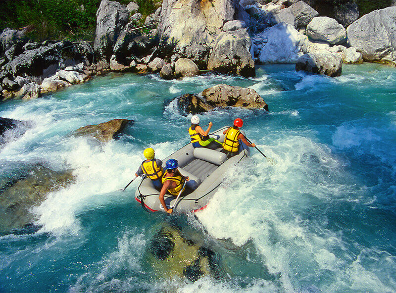
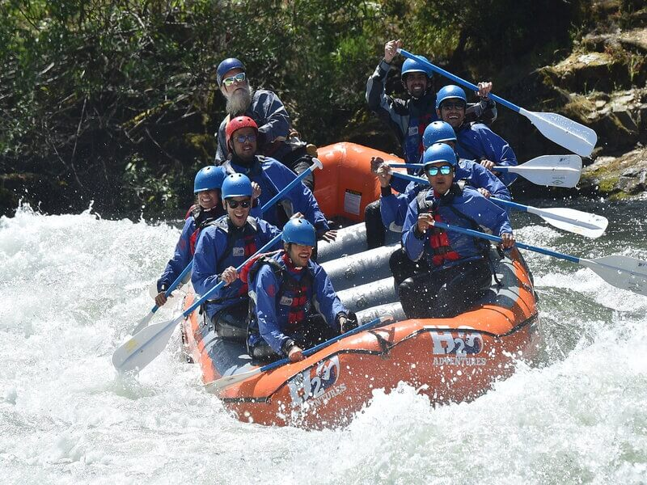

Rivers
The Salmon River
The Snake River
The Salmon River is an excellent white-water rafting destination due to its diverse rapids, catering to all skill levels. Flowing through the stunning Frank Church-River of No Return Wilderness, the river offers breathtaking scenery and encounters with diverse wildlife. With consistent water flows, the Salmon River ensures a thrilling rafting experience throughout its extended season. Its rich cultural history and the availability of guided trips further enhance the appeal, making it an ideal choice for adventurers seeking an unforgettable and accessible white-water rafting adventure.
The Snake River, particularly in Hells Canyon, is a prime destination for white-water rafting due to its combination of thrilling rapids and stunning natural beauty. Carving through North America's deepest river gorge, rafters navigate Class III and IV rapids surrounded by rugged canyon landscapes. The Snake River offers a diverse range of experiences, accommodating both adrenaline-seeking enthusiasts and those looking to appreciate the awe-inspiring scenery. The accessibility of the canyon, coupled with the opportunity for wildlife sightings, creates an unforgettable white-water rafting adventure in the heart of Idaho's dramatic landscapes.
 